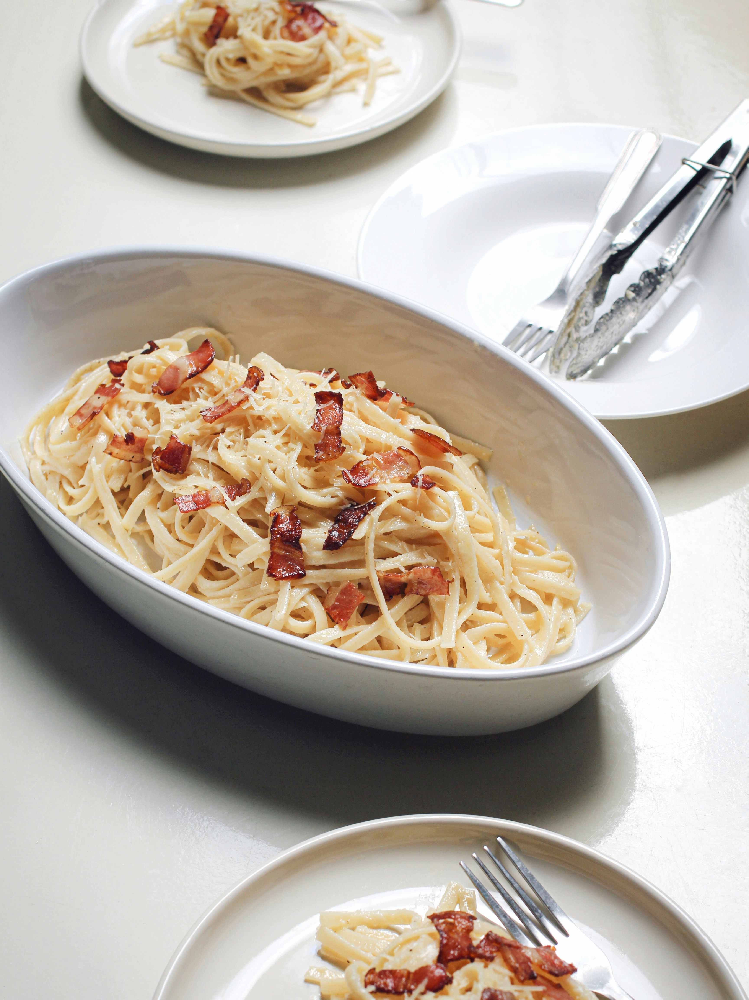

Parma-nara

Description
While carbonara is usually made with bacon, this recipe uses parma ham as a healthier - and equally delicious - alternative.
Let's get started!
Ingredients
Serves 2
- 5 slices of parma ham, cut into strips
- 250g dried pasta of any kind
- 2 whole eggs
- 1 egg yolk
- 4 cloves of garlic, crushed
- 40g grated parmesan
- Chopped fresh parsley OR dried parsley
Steps
- Fry the strips of parma ham in a frying pan, without adding oil, until they turn crisp. Set them aside.
- Combine the eggs, egg yolk, garlic, and parmesan in a bowl and mix, then set the mixture aside.
- In a pan, cook the pasta until al dente in salted water according to packet instructions.
- Drain away most of the pasta water, leaving only about one ladle-full of pasta water in the pan.
- Add the egg mixture into the pan with the pasta, and stir until the pasta is coated in the sauce, for about 2 minutes.
- Add in the strips of parma ham and mix.
- Serve with ground black pepper, parsley, and more cheese.